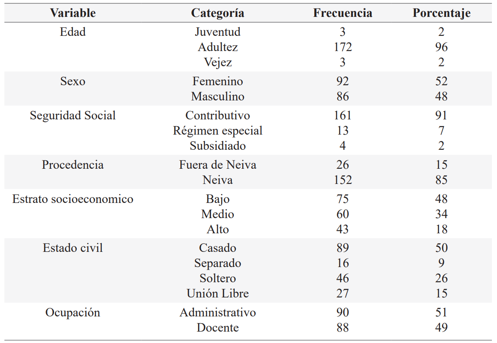
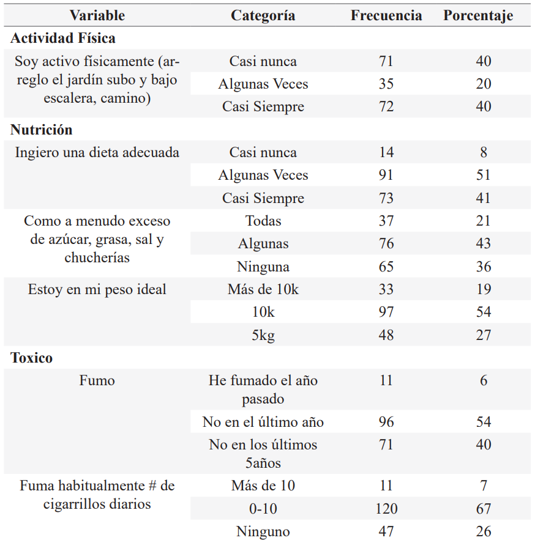
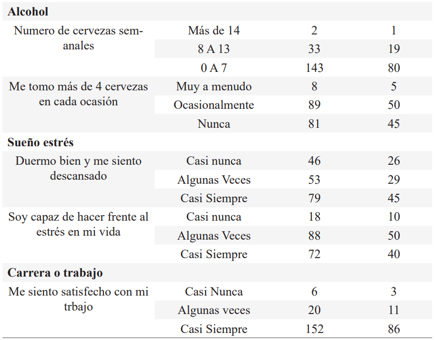
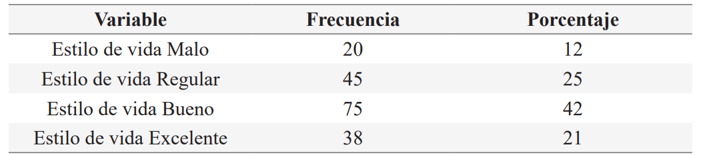
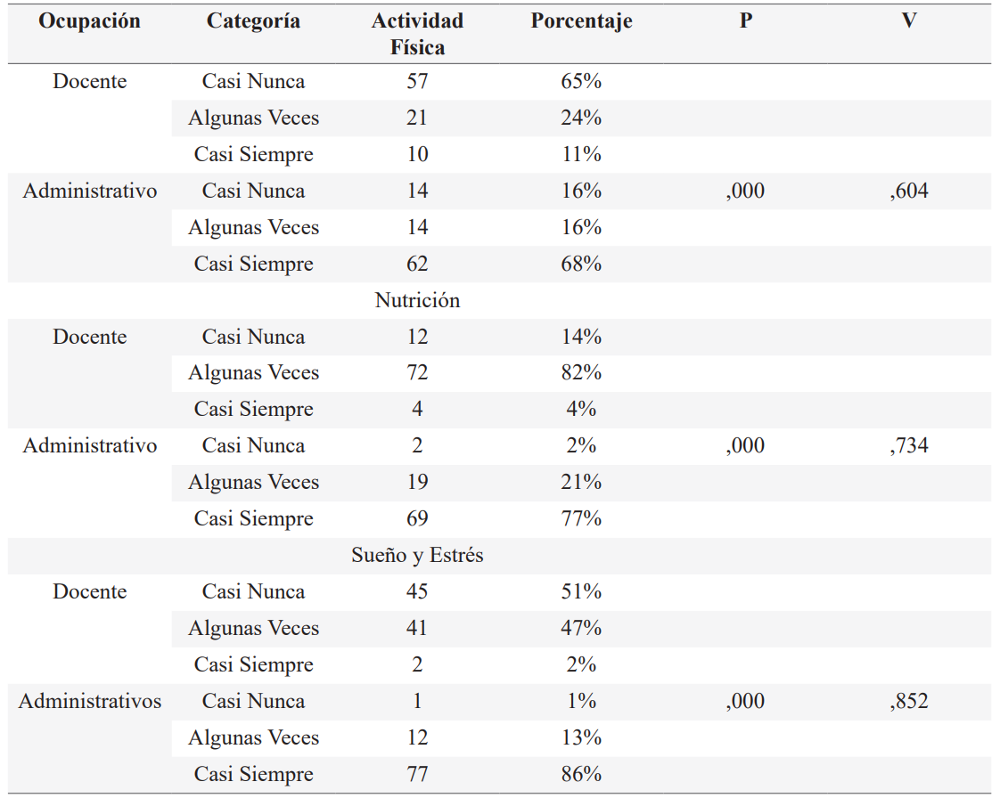

ISSN-PRINT 1794-9831 / E-ISSN 2322-7028
Vol. 20 Nº 1 / ene - abr 2023 / Cúcuta, Colombia.
ISSN-PRINT 1794-9831 / E-ISSN 2322-7028
Vol. 20 Nº 1 / ene - abr 2023 / Cúcuta, Colombia.
Resumen
Objetivo: Determinar los comportamientos del estilo de vida en docentes y administrativos de una universidad pública de Colombia. Materiales y métodos: Investigación cuantitativa descriptiva de corte trasversal. El tamaño de la muestra fue de 178 docentes y administrativos, mediante un muestreo aleatorio simple. Se aplicó un cuestionario auto diligenciado compuesto por una ficha sociodemográfica y el instrumento fantástico, diseñado por el Departamento de Medicina Familiar de la Universidad McMaster de Canadá, ajustado por el investigador Pedro Reyes Gaspar, obteniendo un Alfa de Cronbach, de 0,706, y un coeficiente de Spearman Brown r=0,616 y la correlación dos mitades de Guttman r=0,615. Los datos se trabajaron a través del programa SPSS versión 24, mediante análisis estadístico descriptivo univariado de frecuencias y tablas de contingencia. Resultados: El 40% de la población no es activa físicamente, más de la mitad de los docentes y administrativos aseguran que no ingieren una dieta adecuada, el 26% casi nunca duermen bien y se sienten descansados, el 29% algunas veces duerme bien y descansa. El 50% algunas veces es capaz de hacer frente al estrés en sus vidas y 10% casi nunca puede manejar el estrés. Se identificó riesgo en salud en los docentes en las dimensiones de actividad física, nutrición, sueño y estrés (p.000) en comparación con los administrativos. Conclusiones: Se halló que el perfil de estilo de vida en docentes y administrativos de una universidad pública de Colombia se caracteriza por la inactividad física, una mala alimentación, un mal manejo del estrés y trastornos del sueño.
Palabras Claves: Estilo de vida; Docente; Promoción de la salud; Enfermedad crónica; Administrativo.
Abstract
Objective: To determine the behaviors of the lifestyle in teachers and administrators of a public university in Colombia. Materials and methods: cross-sectional descriptive quantitative research. The sample size was 178 teachers and administrators, using simple random sampling. A self-completed questionnaire was applied, consisting of a sociodemographic record and the fantastic instrument, designed by the Department of Family Medicine of the McMaster University of Canada, adjusted by the researcher Pedro Reyes Gaspar, obtaining a Cronbach's Alpha of 0.706, and a coefficient Spearman Brown r=0.616 and Guttman's twohalf correlation r=0.615. The data was worked through the SPSS version 24 program, through univariate descriptive statistical analysis of frequencies and contingency tables. Results: 40% of the population is not physically active, more than half of teachers and administrators say they do not eat a proper diet, 26% almost never sleep well and feel rested, 29% sometimes sleep well and rest. 50% are sometimes able to cope with stress in their lives and 10% can hardly ever handle stress. Health risk was identified in teachers in the dimensions of physical activity, nutrition, sleep and stress (p.000) compared to administrative staff. Conclusions: it was found that the lifestyle profile of teachers and administrators at a public university in Colombia is characterized by physical inactivity, poor nutrition, poor stress management and sleep disorders.
KeyWords: Lifestyle; Teacher; Health promotion; Chronic disease; Administrative
Resumo
Objetivo: Determinar os comportamentos do estilo de vida em professores e administradores de uma universidade pública na Colômbia. Materiais e métodos: pesquisa quantitativa descritiva transversal. O tamanho da amostra foi de 178 professores e gestores, utilizando amostragem aleatória simples. Foi aplicado um questionário autopreenchido, composto por um registro sociodemográfico e o instrumento fantástico, elaborado pelo Departamento de Medicina de Família da Universidade McMaster do Canadá, ajustado pelo pesquisador Pedro Reyes Gaspar, obtendo um Alfa de Cronbach de 0,706, e um coeficiente Spearman Brown r=0,616 e correlação de duas metades de Guttman r=0,615. Os dados foram trabalhados por meio do programa SPSS versão 24, por meio de análise estatística descritiva univariada de frequências e tabelas de contingência. Resultados: 40% da população não é fisicamente ativa, mais da metade dos professores e gestores dizem não ter uma alimentação adequada, 26% quase nunca dormem bem e se sentem descansados, 29% às vezes dormem bem e descansam. 50% às vezes são capazes de lidar com o estresse em suas vidas e 10% dificilmente conseguem lidar com o estresse. O risco à saúde foi identificado nos professores nas dimensões atividade física, nutrição, sono e estresse (p.000) em relação aos funcionários administrativos. Conclusões: verificou-se que o perfil de estilo de vida de professores e administradores de uma universidade pública na Colômbia é caracterizado por inatividade física, má nutrição, má gestão do estresse e distúrbios do sono.
Palavras-chave: Estilo de vida; Professor; Promoção da saúde; Doença crônica; Administrativo.
Autor de correspondencia*
1* Psicóloga.
Magister en Educación
y Desarrollo Comunitario. Especialización y Doctorado en Bioética. Docente Tiempo Completo programa
de
Medicina Universidad Surcolombiana.
Neiva-Colombia.
cabreraesperanza@usco.edu.co,
Psicóloga.
Magister en Educación
y Desarrollo Comunitario. Especialización y Doctorado en Bioética. Docente Tiempo Completo programa
de
Medicina Universidad Surcolombiana.
Neiva-Colombia.
cabreraesperanza@usco.edu.co,  0000-0001-8868-2832
0000-0001-8868-2832
2* Medico.
Universidad Central del Ecuador Quito. Especialización en Gerencia de Servicios de Salud y
Epidemiologia. Doctorado en ciencias de la salud.
Docente Tiempo Completo programa
de Medicina Universidad Surcolombiana. Neiva-Colombia.
reyesgaspar@usco.edu.co, 0000-0002-1597-409X
3* Psicólogo
Universidad Surcolombiana. Psicólogo proyecto institucional
Usco Saludable de la Universidad Surcolombiana. Neiva-Colombia.
sergio.charry@usco.edu.co, 0000-0002-0949-3791
Recibido: 21 julio 2022
Aprobado: 10 diciembre 2022
Para citar este artículo / To reference this article / Para citar este artigo: Cabrera-Diaz E, Reyes-Gaspar PL, Charry-Mendez S. Perfil del estilo de vida en docentes y administrativos de una universidad. 2023; 20(1):81-93. https://doi.org/10.22463/17949831.3336
© Universidad Francisco de Paula Santander.
Este es un artículo bajo la licencia CC-BY-NC-ND

Introducción
Los estilos de vida están determinados por las interacciones sociales, socioeconómicas, ambientales y tradiciones que motivan las conductas y comportamientos de las personas guiando su forma de vida (1). Los estilos de vida están permanentemente alineados con las decisiones que se toman afectando o favoreciendo el estado de salud, por lo tanto, cada toma de decisiones que el individuo realice, hace que sus patrones de comportamiento no sean fijos, sino que por el contrario estén en transformación, de ahí que estos logren ejercer cambios profundos en la salud.
En la actualidad, el perfil epidemiológico del modelo de enfermedad ha sufrido cambios importantes, esto se observa en la disminución de las enfermedades infectocontagiosas, gracias a los avances científicos, creación de vacunas, medicamentos y acciones encaminadas a la prevención que protegen a la población en general. Sin embargo, este espacio ha sido ocupado por las enfermedades crónico-degenerativas, este proceso ha elevado el interés de investigadores en desarrollar trabajos que estudian la relación de los comportamientos humanos y el origen de la enfermedad, esto ha llevado a evidenciar que la morbilidad y mortalidad de algunas enfermedades presentan una relación constante con los estilos de vida de grupos de población específicos. En este sentido, toma importancia señalar a los estilos de vida como un factor trascendental en el proceso de salud-enfermedad.
Las enfermedades no trasmisibles (ENT) son patologías de prolongada duración, evolución lenta (2) y representan un desafío para los servicios de salud y la salud pública por su dimensión, su alto nivel de mortalidad y morbilidad, su porcentaje de carga de enfermedad con la pérdida de años saludables y productivos en la población, su afectación socioeconómica mundial y su alto costo de tratamiento (3, 4). Entre ellas tenemos las enfermedades cardiovasculares, enfermedades respiratorias crónicas, diferentes tipos de cáncer y la diabetes. Las ENT son la principal causa de muerte en el mundo, originando 41 millones de muertes cada año, es decir 71% de las muertes que se registran a nivel mundial (5). Estos fallecimientos en un principio estaban relacionados con personas de la tercera edad, pero cada año 15 millones de estas muertes ocurren en personas de 30 a 69 años, más del 80 % de estas defunciones acontecen en países en desarrollo (5), por esta razón son consideradas un problema de salud pública (6). En Colombia, las ENT contribuyen con 110 mil fallecimientos anuales (7). Según el Ministerio de Salud y Protección social más del 75% de la morbilidad que se registra en el país está relacionada con las ENT (8). La carga de las ENT en población económicamente activa es preocupante, se estima que las próximas dos décadas la producción a nivel mundial alcance perdidas acumulativas de más de 46 billones de dólares como resultado de las enfermedades cardiovasculares, respiratorias crónicas, hipertensión arterial, cáncer y diabetes (9). En América Latina, los datos evidencian que el 30% de las defunciones relacionadas con las enfermedades cardiovasculares, el 20% ocurren en personas de bajos recursos y el 10% en personas con ingresos estables (9).
En población económicamente activa se ha observado el establecimiento de factores de riesgos que impactan el estilo de vida de los individuos y las empresas (10,11). Estos factores están relacionados con la modernidad, los avances científicos y tecnológicos que han desarrollado en la población nuevos hábitos que implican la reducción alarmante del ejercicio y actividad física, consumo excesivo de productos procesados, consumo de tabaco y alcohol, bajo consumo de frutas y verduras, la subvaloración del cuidado médico y la apatía sobre el autocuidado de la salud.
Se tiene una idea veraz de la importancia del personal docente y administrativo en el alcance de los objetivos y resultados en el andamiaje educativo, que representa un elemento primordial en el comportamiento de los jóvenes en nuestra sociedad. La Institución educativa superior, aparte de tener la obligación de formar individuos aptos para el progreso de la sociedad y las comunidades, posee un nuevo reto que enfrentar, el favorecer el desarrollo humano y calidad de vida de quienes estudian y trabajan en dicho centro. La universidad constituye un entorno favorable para la formación en hábitos saludables de la comunidad educativa en general.
Los trabajadores administrativos y docentes universitarios, por las funciones que desempeñan que envuelven un conjunto de exigencias y presiones (incorporación de nuevo conocimiento, evaluación, preparación de clases, manejo de nuevas tecnología de comunicación e información, exigencias emocionales, etc.), que hacen que su labor implique un horario exigente que en ocasiones impide una buena alimentación, un escaso movimiento físico, presencia de ansiedad y estrés. Convirtiéndolos en una población de alto riesgo para el deterioro de su salud y bienestar (12, 13, 14). A pesar de lo afirmado anteriormente, las investigaciones con esta población a nivel regional y nacional son escasas, esto hace confusa una mirada objetiva sobre la salud y el bienestar de la comunidad universitaria. Por ello, esta población representa un alto interés para el desarrollo de estudios del autocuidado de la salud desde la promoción de la salud, que conlleven a una trasformación del concepto de salud, resaltando por parte de docentes y administrativos la autogestión de la salud y de las contribuciones económicas, sociales y culturales que esto sobrelleva.
La universidad es un espacio esencial para la promoción de estilos de vida saludables, esto debido al tiempo en que los docentes y administrativos permanecen en la misma. La promoción de la salud para los docentes y administrativos de la universidad tienen como objetivo básico brindar todas las herramientas para conseguir un equilibrio saludable, es decir, con salud o enfermedad, se propicia un proceso de autocuidado de la salud, que se desarrolla día a día hasta convertirse en hábito. Por esta razón, es importante que los docentes y administrativos lleven y fomenten una vida en la que resalte la toma de decisiones que afecta la salud de cada persona y por tanto, a la comunidad en la cual desarrollan un papel. Con el presente estudio se contribuirá en el abordaje eficaz de la prevención y manejo de las ENT en población económicamente activa teniendo en cuenta la declaración política de la Reunión de Alto Nivel de la Asamblea General de las Naciones Unidas, en donde aseguran que atenuar esta situación dependerá de un adecuado manejo multisectorial.
La importancia de esta investigación radica en obtener información clara y objetiva que permitirá mejorar la salud y el bienestar a través de intervenciones dirigidas para potenciar la salud de los docentes y administrativos universitarios desde la detección de los estilos de vida, de igual manera se pretende describir el perfil actual de salud de los mismos y aumentar esfuerzos para reducir el riesgo de enfermedad y mejorar la calidad de vida de la comunidad universitaria.
Objetivo General
Determinar los comportamientos del estilo de vida en docentes y administrativos de una universidad pública de Colombia.
Materiales y Métodos
Se realizó un estudio descriptivo de corte trasversal, con docentes y administrativos de una universidad pública de Colombia, en el periodo 2021-A. El universo de la muestra era de 250 docentes y administrativos de la facultad de educación, para su cálculo se tomó una confiabilidad del 95 % y un error estándar de muestreo de 3,87 para un total de 178 sujetos, 90 administrativos y 88 docentes. El tipo de muestreo fue aleatorio simple, mediante las listas de participación en las actividades del proyecto institucional Usco Saludable en su dimensión clínico-sanológica. Como criterios de inclusión se establecieron ser docente con relación laboral por nombramiento, personal administrativo con contrato laboral vigente de la Universidad, participación libre y voluntaria en la aplicación de la historia clínico-sanológica del proyecto institucional Usco Saludable. Como Criterios de exclusión se utilizó ser contratista por prestación de servicio y docente catedrático.
Para la recolección de la información se aplicó un cuestionario auto diligenciado (Historia clínico-sanológica), ésta permitió recoger los datos descriptivos con la muestra seleccionada para el estudio, con el propósito de determinar los aspectos relevantes de los docentes y administrativos. La primera parte presentará la variable de datos sociodemográficos. La segunda parte será el cuestionario denominado Fantástico para valoración de estilos de vida, fue diseñado por el Departamento de Medicina Familiar de la Universidad McMaster de Canadá, modificado por el Centro de Estudios de Salud y Bienestar Humano de la Universidad de La Habana y ajustado por el investigador Pedro León Reyes Gaspar (15), luego de la administración de una prueba piloto a 20 sujetos entre docentes y administrativos de la universidad Surcolombiana. Su consistencia interna se observó mediante el Alfa de Cronbach, con el que se obtuvo una correlación de 0,706, que se ubica en el rango óptimo de confiabilidad, lo cual indica que los ítems propuestos por el instrumento miden el constructo de estilos de vida.
Como mecanismo de confirmación de la adecuada confiabilidad del cuestionario, se aplicó el test de coeficiente de Spearman Brown (r=0,616) y la correlación de dos mitades de Guttman (r=0,615), los cuales confirmaron que el instrumento posee una óptima confiabilidad. El cuestionario permite obtener un panorama general del estilo de vida mediante diez dimensiones, para la presente investigación solo se tuvieron en cuenta las siguientes: A: actividad, N: nutrición, T: toxicidad, A: alcohol, S: sueño y estrés, C: carrera (trabajo). En cuanto a la opción de respuesta cada participante respondió a cada pregunta mediante una escala tipo Likert de 0 a 2 en donde 0 equivale a casi nunca, 1 a alguna veces y 2 a casi siempre, para la calificación del cuestionario se sumaron los resultados de cada columna y el resultado se multiplico por dos para obtener el valor final del estilo de vida, por último, se ubica el valor final en la escala de 0 a 100, donde puntajes entre 40 a 59 se consideran un estilo de vida malo, un puntaje entre 60 a 69 un estilo de vida regular, entre 70-84 es un estilo de vida bueno y entre 85 a 100 representa un estilo de vida excelente.
Se seleccionó a los participantes teniendo en cuenta los lineamientos según los criterios del muestreo. Se presentaron los permisos correspondientes a la facultad de educación y los objetivos de la presente investigación. El protocolo de investigación fue presentado al Comité de Ética, Bioética e investigación de la Universidad Surcolombiana para su aprobación, una vez aceptado mediante el acuerdo 056 del 2021 PDI, El coordinador del área clínica del proyecto Usco saludable, médicos y residentes contactaron de forma personal a cada participante acordando hora, lugar y fecha, para la realización de la historia clínico-sanológica, se le explico que el procedimiento ocupara una hora de su tiempo. los participantes diligenciaron inicialmente el consentimiento informado, en donde se aclararán temas como el respeto a los derechos y la dignidad de toda persona, la seguridad de que su identidad no será revelada y se mantendrá la confidencialidad de la información, recibirá respuesta a cualquier pregunta y aclaración a cualquier duda relacionada con la investigación y se enfatiza en la libertad de retirar su consentimiento en cualquier momento y dejar de participar en el estudio sin problema o perjuicio alguno.
También, se desarrolló una base de datos en SPSS® versión 24 para la tabulación y análisis de los datos, a quienes se les aplicaron estadísticos descriptivos univariado de frecuencia; se elaboraron tablas de contingencia para hallar fuerza de asociación entre las varia¬- bles y establecer pruebas inferenciales para la relación de variables sociodemográficas y los estilos de vida. Igualmente, se estableció un nivel de significan¬cia estadística del 0,05 (p < 0,05). Se aplicó el coeficiente V de Cramer (V) para identificar el grado de intensidad en el que las variables están relacionadas, este coefciente maneja resultados que varían de 0 a 1, en donde 0 y 0,2 indica que no hay asociación, 0,2 determina una asociación débil, entre 0,2 y 0,6 se establece una asociación moderada y entre 0,6 y 1 muestra asociación fuerte entre variables.
Resultados
Se analizaros los datos de 178 docentes y administrativos de una universidad pública. El 96% de la población se encuentra en la etapa de adultez (27 y 59 años de edad). La mayoría es de sexo femenino con un 52%. El 91% está afiliado al régimen contributivo, seguido del 7% que está en el régimen especial y solo el 2% se encuentra en el régimen subsidiado. En relación a la procedencia el 85% manifiesta ser de Neiva. En cuanto al estrato socioeconómico el 48% pertenece a un estrato bajo, el 34% al medio y el 18% hace parte de un estrato alto. Con respecto al estado civil se pudo identificar que el 50% de la población es casada, el 15% convive en unión libre, el 26% está soltero y el 9% refirió ser separado. En cuanto a la ocupación el 51% tiene labores administrativas en la institución educativa superior, mientras que el 49% se dedica a la docencia (Tabla 1).
Tabla 1. Características generales de docentes y administrativos de una Universidad Pública
Fuente: visor de resultado SPSS 24
El análisis de las dimensiones de los estilos de vida en docentes y administrativos evidencio que el 40% casi nunca es activo físicamente, seguido del 20% que afirma que algunas veces es activo físicamente, mientras que el 40% considera que si es activo físicamente. En la dimensión nutrición se identificó que el 51% de los docentes y administrativos manifiestan que algunas veces ingieren una dieta adecuada, el 41% aseveran que casi siempre su dieta es adecuada y solo el 8% afirman que casi nunca ingieren una dieta adecuada. En lo concerniente al consumo a menudo de exceso de azúcar, grasa, sal y chucherías el 21% indicó que las consume todas, el 43% contesto que consume algunas de estas, mientras que el 36% no consume ninguna. En la variable estoy en mi peso ideal el 54% cree que esta 10kilos por encima del peso ideal. En referencia al consumo de cigarrillo el 54% contesto no haber fumado en el último año, el 40% no haber fumado en los últimos cinco años y el 6% asegura haber fumado el año pasado. En cuanto al consumo diario de cigarrillo el 67% declara que su consumo está en el rango de 0 a 10, el 26% dice que no fuma ningún cigarrillo diariamente. El 80% de los docentes y administrativos afirman que consumen entre 0 a 7 cervezas semanales, de igual manera la mitad de la población (50%) manifiestan que consumen ocasionalmente más de 4 cervezas en cada ocasión o reunión. En la dimensión sueño y estrés se pudo identificar que el 26% casi nunca duermen bien y se sienten descansados, el 29% algunas veces duerme bien y descansa, mientras que el 45% señalan casi siempre descansar y dormir bien. El 50% de los encuestados afirman que algunas veces es capaz de hacer frente al estrés en sus vidas y 10% casi nunca puede manejar las situaciones de estrés. El 86% de los encuestados está satisfecho con el trabajo que tiene (Tabla 2).
Tabla 2. Descriptivo del estilo de vida en docentes y administrativos de una universidad pública
 Fuente: visor de resultado SPSS 24.
Los resultados obtenidos para los estilos de vida relacionados con la salud en la población en general, mostraron que el 12% de los docentes y administrativos tienen un estilo de vida malo, el 25% presenta un estilo de vida regular, el 42% muestra un estilo de vida bueno y el 21% poseen un estilo de vida excelente (Tabla 3).
Tabla 3. Estilo de vida en docentes y administrativos de una Universidad Publica
Fuente: visor de resultado SPSS 24.
Respecto a la asociación entre los estilos de vida y las características generales en docentes y administrativos de una universidad pública, en primer lugar se muestra que la dimensión actividad física presenta una relación significativa (p=.000) y un grado de intensidad fuerte (V.604) con la variable ocupación (Docentes-Administrativo), en donde se observó un mayor porcentaje de administrativos que afirmaron ser activos físicamente casi siempre con un 68% en comparación con los docentes en donde el 65% aseguro casi nunca ser activo físicamente. Con relación a la variable ingiero una dieta adecuada de la dimensión nutrición se pudo identificar una asociación significativa con la variable ocupación (p=.000), revelando que el 77% de los administrativos manifiesta ingerir una dieta adecuada, mientras que el 82% de los docentes argumentan algunas veces tener una dieta adecuada. Esta asociación tiene una intensidad fuerte (V.734). En cuanto a la dimensión de sueño y estrés se pudo evidenciar un grado de intensidad fuerte (V.852) y una asociación significativa (p=.000) con la variable ocupación en donde 86% de los administrativos afirman casi siempre dormir bien y sentirse descansados, en comparación con los docentes quienes manifiestan con un 51% casi nunca dormir bien y descansar (Tabla 4).
Tabla 4. Asociación de estilo de vida y características generales.
Fuente: visor de resultado SPSS 24.
Discusión
El presente estudio tuvo como objetivo determinar los comportamientos del estilo de vida en docentes y administrativos de una universidad pública de Colombia. Los estilos de vida poco saludables en docentes y administrativos universitarios, son cada vez más frecuentes, este debido a las responsabilidades y actividades (Académicas, administrativas, orientación a estudiantes, uso de tecnologías, largas horas de lectura, atención al usuario) que exigen una entrega incondicional por parte del personal. Ello requiere destinar largos periodos de tiempo en poco movimiento, una alimentación no balanceada y escaso descanso que aumentan las dificultades en salud de esta población (13,16).
Esto se evidencia en la presente investigación en donde se pudo demostrar que más de la mitad de los docentes y administrativos casi nunca y algunas veces realizan actividad física, es decir tienen una vida sedentaria. Las razones por la que no se practica actividad física en esta población están relacionadas a los avances tecnológicos, falta de tiempo y exceso de obligaciones y trabajo (17). Resultados similares se encontraron en distintos estudios (10, 18,19). La actividad física es reconocida como una herramienta práctica que contribuye a potencializar y reparar el estado de salud, convirtiéndola en un factor protector con la capacidad de neutralizar los efectos negativos de los comportamientos de riesgo (20, 21). Sobre este aspecto, la presente investigación, identificó una asociación significativa entre la dimensión de actividad física y ocupación (docentes-administrativos), lo que permite evidenciar que los administrativos realizan más actividad física en comparación con los docentes. Este resultado no concuerda con lo observado por Rodríguez- Salazar et al., (22) donde encontraron que los administrativos presentaban niveles más alto de sedentarismo y los docentes son más activos físicamente. En este sentido, la actividad física está influenciada por las motivaciones para su práctica en donde suele realizarse solo como rutina o pasa tiempo y no como promotora de salud física, biológica y mental (14).
Desde la dimensión de nutrición se encontró que más de la mitad de la población considera que no ingiere una dieta adecuada, que consume en exceso alimentos pocos saludables y que esta pasado de su peso ideal por lo menos 10 kilos. Esto coincide con otros estudios (23, 24) en donde se evidencio los inadecuados hábitos alimenticios en docentes y administrativos. En esta dimensión se halló una asociación significativa entre ingerir una dieta adecuada y la ocupación, en donde los administrativos con un 77% manifiesta ingerir una dieta adecuada, esto no está relacionado con otras investigaciones en donde revela que el personal trabajador del área administrativa universitaria presentan más riesgo de padecer enfermedades crónicas no trasmisibles por comportamientos inadecuados como una mala alimentación y sedentarismo (25).
En lo referente a la dimensión de antecedentes tóxicos se pudo constatar el bajo consumo de cigarrillo y alcohol diario y habitual en la población, esto resulta similar con otras investigaciones en donde se estableció que solo el 5% de los docentes y el 7% de los administrativo manifestó fumar, mientras que 9,7% consume alcohol (16, 26), sin embargo en población adulta en Colombia se establece un consumo fuerte y dependiente de tabaco que rodea el 49,2% (27). Las razones que se podrían establecer para el bajo consumo en esta población radican en el conocimiento sobre los efectos negativos, como el peligro a la dependencia y el riesgo desfavorable hacia la salud (26).
En este estudio se identificó que más de la mitad de los docentes y administrativos (55%) argumentan casi nunca y algunas veces no dormir bien, sentirse cansados y no tener las herramientas para hacer frente al estrés que viven a diario. Estos resultados son congruentes con otras investigaciones en donde la prevalencia de estrés en docentes y administrativos es del 67% y 44.6% respectivamente (28, 29, 30). Estas ocupaciones (docentes-administrativos) demandan del individuo una entrega total que se trasforma en una gran carga de trabajo que produce angustia psicológica y grados bajos de satisfacción laboral, comparándolos con otras actividades o profesiones. De igual manera toda la angustia psicológica y la insatisfacción laboral produce en el personal estados negativos emocionales y físicos que influyen en su productividad laboral (31, 32). En esta área se halló asociación significativa en donde casi la totalidad de los administrativos aseveraron dormir bien y sentirse descansados en comparación con los docentes en donde solo el 2% manifiesto dormir bien y sentirse descansado. Estos hallazgos son afines por lo encontrado por Soriano-Tumbaco (33) que en el personal administrativo de una universidad Estatal no observo presencia de estrés laboral. Esta condición está asociada a que el trabajo administrativo es elaborado es su gran mayoría por equipos de trabajo que repercuten en la integración y crecimiento personal del trabajador (34), mientras que el personal docente su carga de trabajo la desarrolla de forma individual (planificación de lecciones, organizan actividades, desarrollan y mejoran planes de estudio, manejan actividades extracurriculares, supervisión de clase), generando un mayor impacto en su desarrollo personal, que a su vez representa una oportunidad generadora de estrés y ansiedad (28).
Según los hallazgos del estudio, la mayoría (86%) de los docentes y administrativos se encuentran satisfechos con el trabajo que poseen, a pesar de presentar dificultades para descansar y dormir bien en el personal docente, situación relacionada con el estrés. Lo que es similar a lo encontrado en otros estudios, en donde se observó un nivel alto de satisfacción laboral en los docentes y administrativos de una universidad (33, 35, 36, 37).
En relación a la alta satisfacción laboral que argumentan los docentes, esta puede estar influencia a las posibilidades de progreso en la institución, relaciones interpersonales con sus pares y la remuneración recibida, aunque esta última resulta una variables más satisfactoria en estudios con universidades privadas en comparación con instituciones públicas de educación superior (33). En cuanto a los administrativos, esta condición suele verse relacionada con el tipo de vinculación a la institución, que para este estudio todo el personal era incorporados directamente con la universidad, es decir de planta y con la antigüedad (36). La satisfacción laboral alta en el personal administrativo, está relacionada con el tipo de tareas que desarrollan y la relación con colegas y superiores (38).
En lo concerniente, a la valoración global del estilo de vida de la población en general se pudo constatar que más de la mitad de los docentes y administrativos muestran estilos de vidas buenos y excelentes, pero se deben llevar acabo procesos de acompañamiento y seguimiento que permitan llegar a un establecimiento de una cultura de la salud, que solidifique una mejor calidad de vida en la comunidad universitaria, estos resultados concuerdan con lo detallado en estudios anteriores (17, 39).
Desde lo pertinente la investigación permitirá a la universidad disponer de información clara y objetiva para la creación de estrategias y programas de promoción de la salud (Usco Saludable) adaptados a las necesidades locales y a sus posibilidades específicas. La participación activa en la promoción de la salud implica crear ambientes favorables que generen condiciones de vidas gratificantes, agradables, seguras y estimulantes. Igualmente y desde el ambiente universitario, proporcionar los medios para que los administrativos y docentes ejerzan un mayor control de su propia salud y facilitar todo aquello que la que propicie.
Este estudio contribuye a la academia, le ofrece un referente investigativo y teórico sobre el perfil del estilo de vida en docentes y administrativos, tema poco explorado en la actualidad. Además, propone factores protectores de las ENT en esta población, ya que estas constituyen un problema de salud pública, y plantea el papel de los trabajadores y las universidades como promotores de la salud. Lo anterior, permite aportar respuestas válidas que sirvan como alternativas de solución a las circunstancias adversas vividas en Colombia en el mundo universitario.
Conclusiones
Conflicto de intereses
Los autores declaran no tener ningun conflicto de intereses.
Referencias bibliograficas